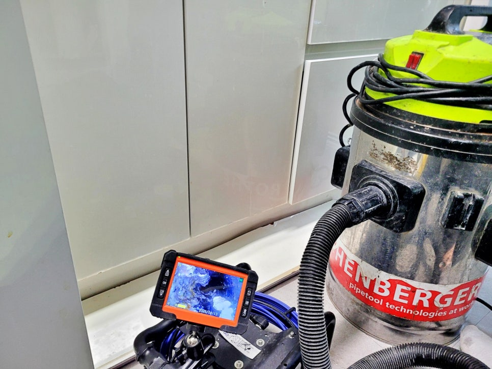
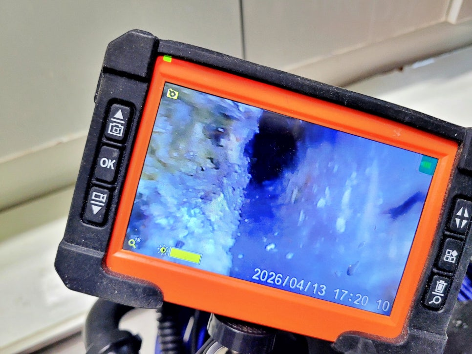
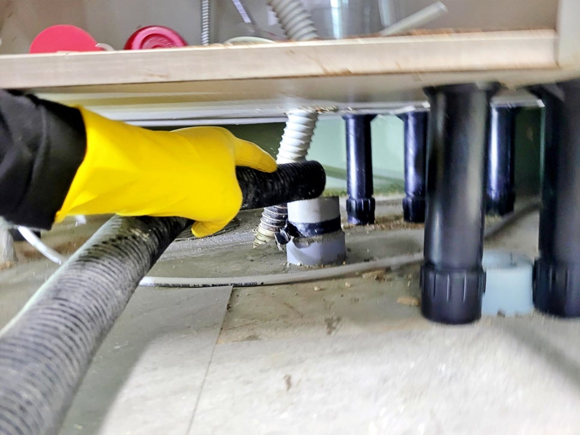
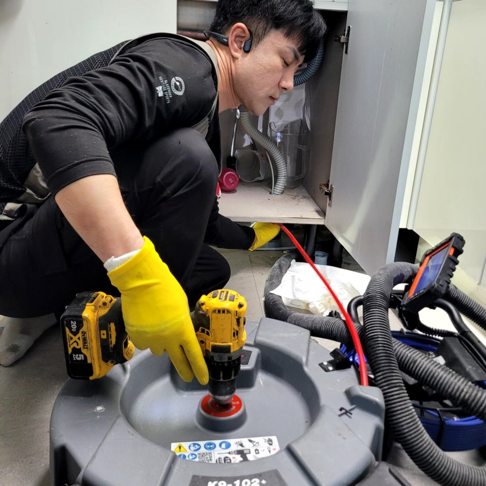
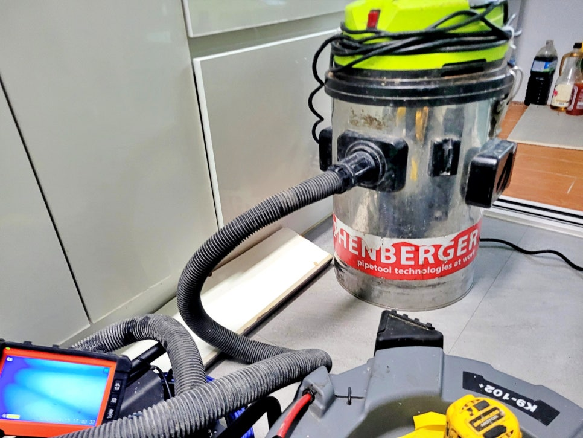
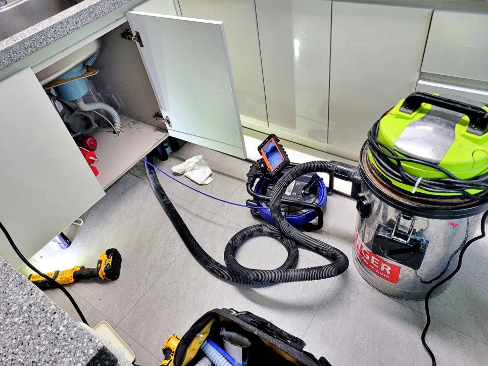

🏠 동탄 반송동 싱크대 배관막힘 역류, 배수구 청소로 물이 잘 내려가요
용인 반송동 싱크대막힘 전문 시공 후기

📋 작업 개요
- 위치: 용인 반송동, 반송동, 용인
- 서비스 유형: 싱크대막힘, 하수구막힘, 배관막힘, 역류해결, 배관청소, 고압세척
- 작업 일시: 2026. 5. 14. 18:13
- 업체명: 하수구수사대 (010-5615-2118)
🔍 문제 상황
동탄 반송동 아파트 싱크대 배관막힘 역류,
배수구 청소로 배수가 원활해진 사례
환영합니다.
동탄 반송동 싱크대 배관막힘 배수구 청소
전문업체 하수구수사대입니다.
이번 현장은 동탄 반송동 아파트에서
싱크대 물이 시원하게 내려가지 않고
배수 상태가 계속 좋지 않다는 연락을 받고
출동한 현장입니다.
동탄 반송동 싱크대 배관막힘 현장
사진을 보시면 싱크대 하부장 안쪽
배관 주변을 먼저 살펴본 모습인데요.
겉으로 보기에는 큰 문제가 없어 보여도
주방 배관은 안쪽에 기름때가 굳어
물길을 좁히는 경우가 많습니다.
이번 동탄 반송동 싱크대 배관막힘
현장에서는 무작정 장비부터 넣지 않고
내시경 카메라를 먼저 투입해
안쪽 상태를 살펴봤는데요.

🔎 원인 분석
💡 전문가 진단: 동탄 반송동 아파트 싱크대 배관막힘 역류,배수구 청소로 배수가 원활해진 사례
싱크대 배수구 내부에 쌓여 있는 기름층
화면에 보이는 것처럼 배관 내부에는
기름 슬러지와 찌꺼기가 들러붙어
배수 흐름을 막고 있었습니다.
배관 속 기름 슬러지 흡입 제거 중
이번 동탄 반송동 싱크대 배관막힘은
단순히 배수구 입구만 막힌 상황이 아니라
안쪽 라인까지 세척이 필요한 상태였습니다.
그래서 샤프트 장비와 석션 장비를 함께
사용해 배관 청소를 진행했습니다.
샤프트 장비로 싱크대 배관 청소 중
샤프트 장비는 배관 안쪽에 붙은
딱딱한 오염물을 긁어내는 데 쓰고,
석션 장비는 떨어져 나온 찌꺼기와
오염수를 빨아내는 역할을 합니다.
둘 중 하나만 쓰면 부족한 현장이라
상태를 보면서 번갈아 작업했습니다.
반송동 싱크대 배관막힘 작업 중간에는
내시경 카메라 화면을 보며
어느 구간에 찌꺼기가 많이 남아 있는지

🔧 작업 과정
실시간으로 살펴봤는데요.
이 과정을 거쳐야 같은 자리에서
막힘이 반복될 가능성을 줄일 수 있습니다.
참고로 싱크대 배관 청소 후 관리할 때는
몇 가지만 주의해도 큰 도움이 됩니다.
1. 기름은 바로 싱크대에 버리지 않기
2. 음식물 찌꺼기는 거름망에서 자주 비우기
3. 커피 찌꺼기나 양념 찌꺼기 흘려보내지 않기
4. 배수가 느려지면 세제만 붓고 방치하지 않기
5. 반복 막힘은 내시경 점검 후 청소하기
특히 기름기가 많은 설거지를
자주 하는 집은 뜨거운 물만 흘려보낸다고
해결되는 게 아닌 경우가 많습니다.
이미 안쪽에 굳어버린 기름때는
전문 장비로 긁어내고 제거해야
배수 흐름이 제대로 돌아옵니다.
내시경 화면을 보며 배수구 청소 중
또 끓는 물을 반복해서 붓는 경우에는
배관 손상으로 더 큰 문제가
발생할 수 있어 주의가 필요합니다.
동탄 반송동 싱크대 배관막힘 작업
마지막에는 배수 테스트를 진행해
싱크대 물이 막힘 없이 내려가는지
살펴봤는데요.
처음보다 배수 속도가 확실히 좋아졌고,
작업 주변도 닦아낸 뒤 마무리했습니다.
배수구 청소로 깨끗해진 모습
오늘 여러분께 소개한
동탄 반송동 싱크대 배관막힘처럼
물이 천천히 빠지거나 냄새가
올라온다면 겉 배수구만 볼 문제가
아닐 수 있습니다.


✅ 작업 완료
하수구수사대는 내시경 카메라와
샤프트, 석션 장비를 함께 활용해
현장 상태에 맞게 배관청소를 진행하고
있으니 언제든지 불러 주십시오.
지금까지
동탄 반송동 싱크대 배관막힘 역류
시공 후기를 읽어주셔서 감사합니다.
#동탄반송동싱크대배관막힘 #동탄싱크대막힘 #반송동싱크대막힘 #동탄싱크대배관청소 #하수구수사대 #동탄싱크대배관청소업체 #배관내시경카메라점검 #동탄하수구막힘




⚠️ 주방 싱크대 배관 막힘 예방 수칙
- ✅ 기름기가 묻은 식기나 프라이팬은 설거지 전 키친타올로 반드시 기름때를 닦아내세요.
- ✅ 주기적으로 싱크대 개수대에 뜨거운 물을 가득 받아 한 번에 내려 배관 내부 기름을 씻어내세요.
- ✅ 배수구 거름망을 미세한 필터로 사용하시고 음식물 찌꺼기가 틈으로 새어 들지 않게 관리하세요.
- ✅ 베이킹소다와 식초를 뜨거운 물과 함께 일주일에 한 번씩 부어주면 배관 살균과 막힘 예방에 좋습니다.
💡 핵심 정리
- 확실한 장비 작업(내시경 점검 및 샤프트 스케일링)으로 원인을 뿌리 뽑습니다.
- 작업 후 1년 이내에 동일한 부위 재발 시 100% 무상 A/S 서비스를 보장합니다.
- 서울 · 경기 · 인천 전 지역에 24시간 언제든 긴급 출동할 수 있도록 항시 대기 중입니다.
❓ 자주 묻는 질문 (FAQ)
🚨 용인 반송동 싱크대막힘 문제로 고민이신가요?
정확한 원인 진단과 확실한 시공으로 재발 없는 해결을 약속드립니다.
24시간 긴급 출동 | 서울 · 경기 · 인천 전지역 | 1년 내 재발 시 무상 A/S